A compact high-field tokamak that makes 848 MW of fusion power on Mars — and the 4.65-hectare radiator field that dumps the heat it can't sell. Beside it, a solar-charged storage field and an eight-module fission plant answer the question the tokamak cannot: what the city runs on when the tokamak stops. Every headline number is pinned to the solver that produced it.
A SPARC/ARC-class high-field tokamak — 14 m cryostat, REBCO magnets, one shared regolith platform — sized so the whole machine fits on a single Starship-served pad.
Starting from a fixed cryostat envelope, the only self-consistent route is the high-field, compact one: 8.85 T on axis from REBCO conductor running at 21 T, a major radius of 3.70 m, and 14.4 MA of plasma current. That buys a fusion gain of Q ≈ 34 at 848 MW — but the honest net, after the 208 MW wall-plug cost of the current drive that keeps it running, is 176 MWe.
Everything on the platform exists to serve or feed that cylinder: the cryogenic plant, two RF current-drive launchers, a heat exchanger into an enclosed generator hall, and — set apart, because it dwarfs the plant — a radiator field the size of a small industrial estate.
One plant is not an architecture. A tokamak is a superb baseload machine and a terrible insurance policy: a quench takes it off the bus in milliseconds, and the repair is measured in sols. Pair that with a global dust storm — when the solar field that charges the storage yard is delivering 15% of nameplate, or less — and the two failures overlap into the one case the city cannot ride out. So the district carries two sources with nothing in common. Fusion is the baseload and the propellant export: 176 MWe at the plant fence, enough that the reactor reaches everything and the storage yard is not a second grid. pwr-fission-01 is the availability insurance — eight 40 kWe free-piston Stirling modules under four metres of regolith, on their own corridor 110° off the fusion incomer, sized not for the city's demand but for its protected tier.
The split shows up in the numbers. The storage field alone holds 153 kW through a storm (145 kW of battery at 15% residual sun, plus 8.3 kW from the regenerative loop) against a protected tier of 217 kW — 0.71× coverage, short by 63.7 kW and 47.1 MWh over 30 sols. That deficit has the shape of sustained power, not stored energy: buying it with batteries would take 38 Megapack-class cabinets that then sit idle for decades while calendar ageing runs anyway. It is a generator-shaped hole, and the fission plant is the generator.
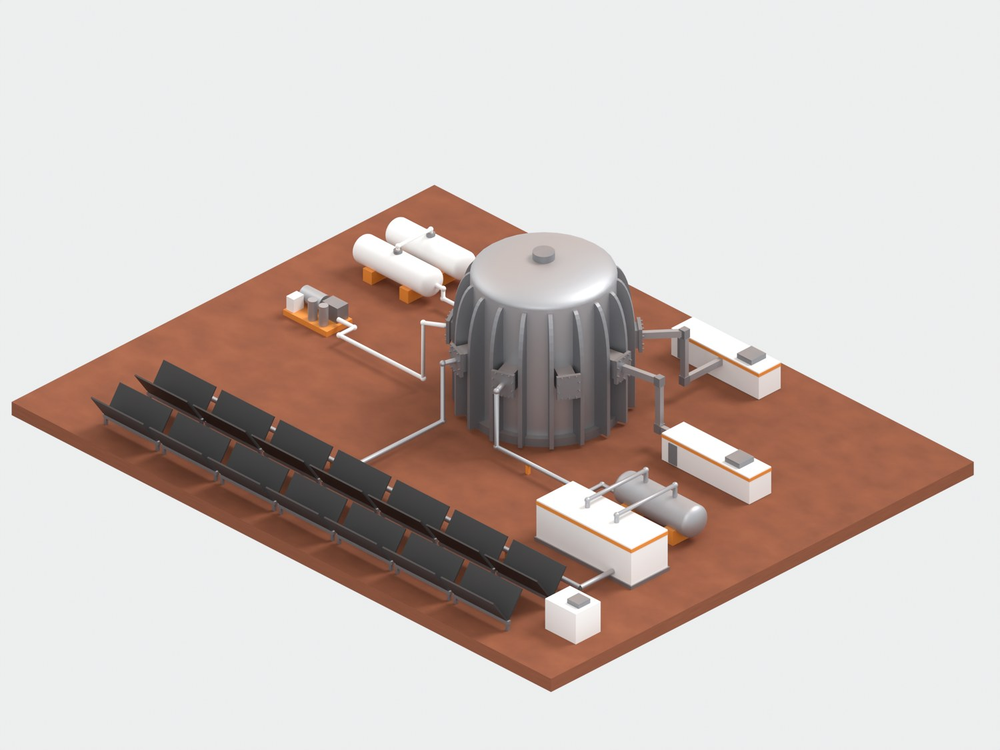
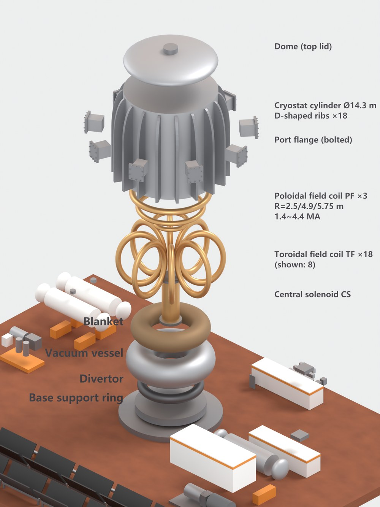
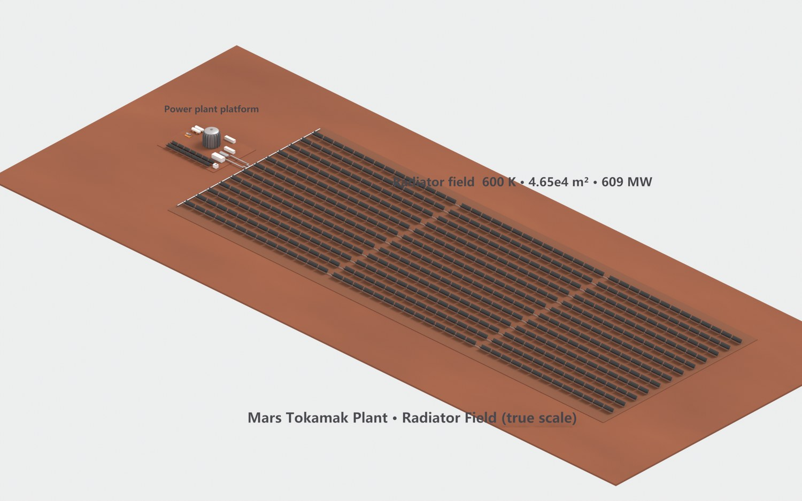
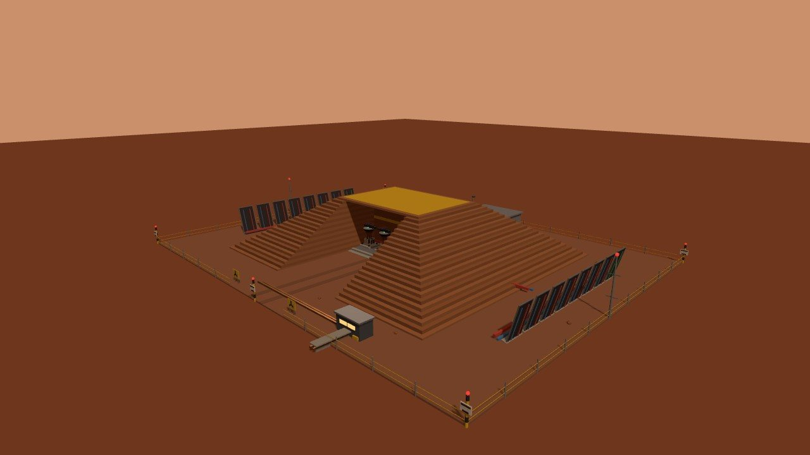
Six physics domains close the reactor, each handing a hard number to the next; the design only became self-consistent after all six agreed. A seventh chain, run separately, answers a different question — what carries the city when the reactor is gone.
Free-boundary double-null, recalibrated to q95 = 3.93. An extra coil pair pulls a second X-point out to the divertor target for a long, radiating leg.
J×B body load on the TF winding. The racetrack cross-section spiked to 3361 MPa at the corners; the D-shape carries the same field at 999 MPa.
18 Monte-Carlo runs proved FLiBe saturates at a net TBR of 0.78 — short of self-sufficiency. Eutectic LiPb plus a thin first wall reaches net 1.10 at 88% coverage.
P_sep/R₀ = 49 MW/m — 3.5× ITER. Only a long-leg X-point target with Ne seeding and detachment survives; the hot SOL that punishes the divertor is what rescues the RF coupling.
83 MW of 5 GHz lower-hybrid waves over a ~9,800-guide grill. HFSS confirms the TE10 cutoff at 3.75 GHz; the high field leaves a 5.7× margin against the density limit.
No air to convect into — 585 MW must radiate. At 600 K that needs 4.65×10⁴ m², which the ISRU study turns from a liability into process heat for water and propellant.
Eight 40 kWe free-piston Stirling modules — nothing on the site rotates — convert at 25% from a 1050 K sodium-heat-pipe hot end. Four metres of regolith is 20 neutron mean free paths; distance alone would need 1,236 km. On a trip the storage PCS holds the bus for the 24 s the fission ramp needs.
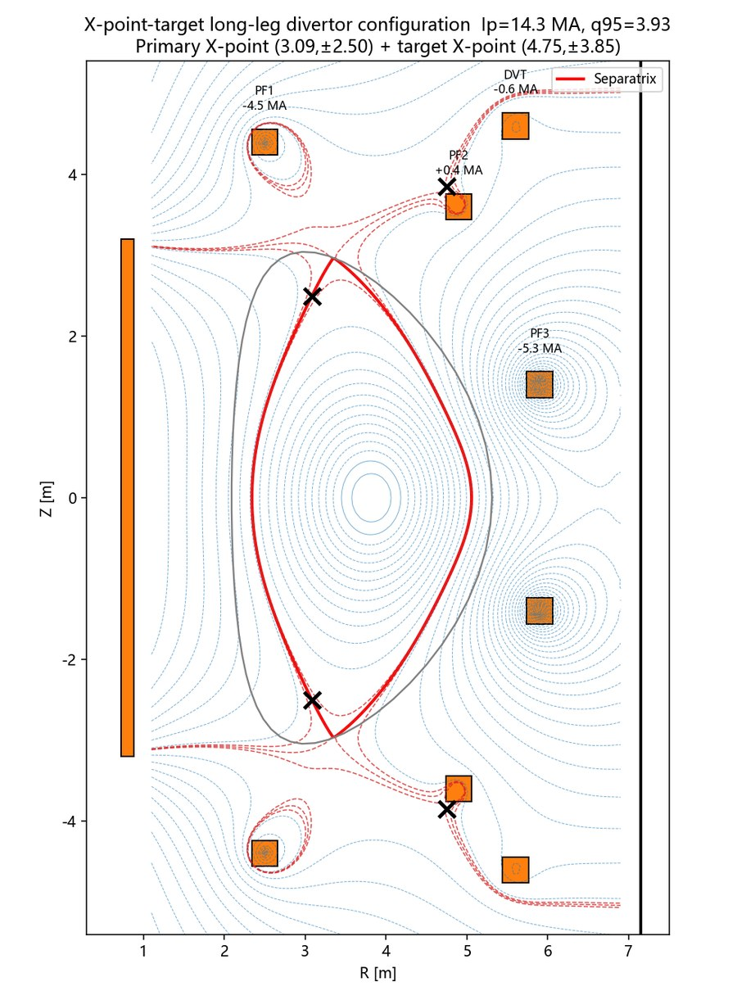
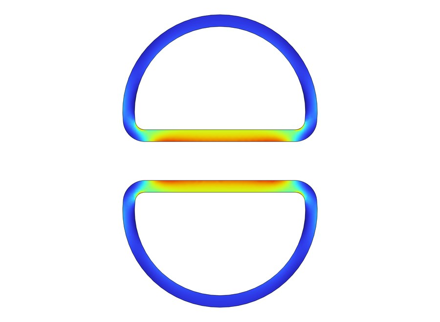
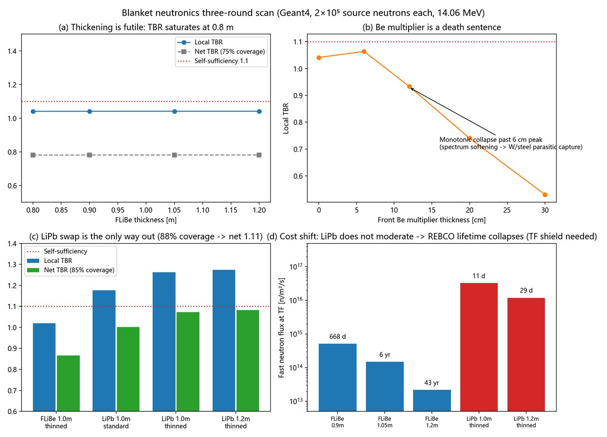
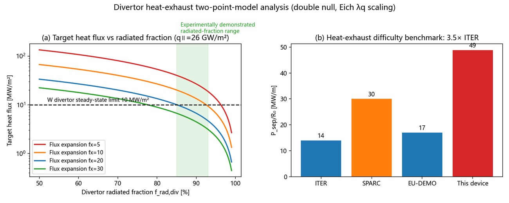
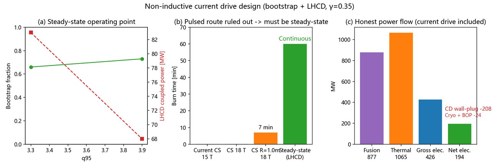
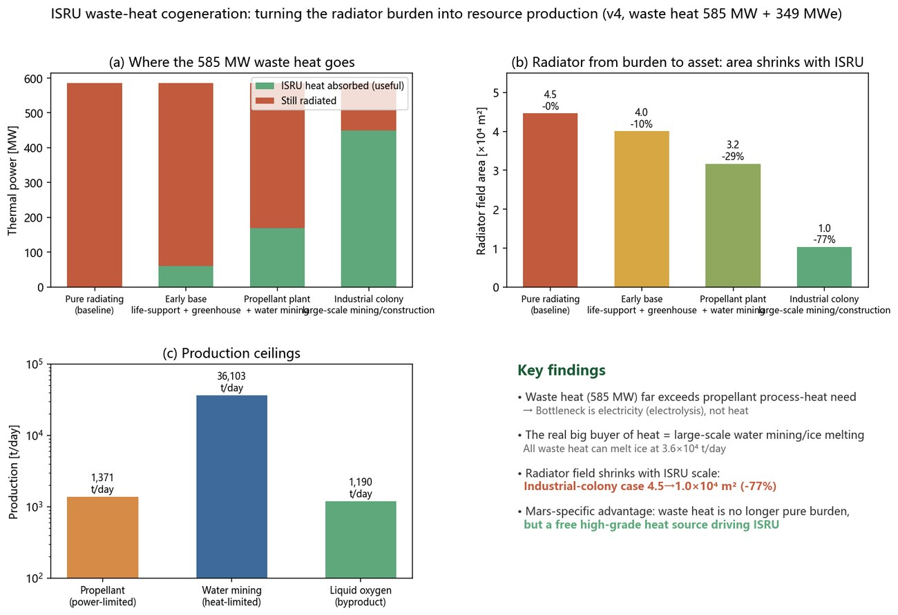
Not everything runs off the reactor. A solar-charged storage field carries the outposts the fusion plant doesn't reach — through the 12-hour night, and through the weeks-long dust storms when the sun barely arrives.
It is a two-tier store, because Mars has two different kinds of dark. Eight Megapack-class LFP cabinets — 31.2 MWh — ride the diurnal cycle; a regenerative hydrogen–oxygen loop (electrolyser, spherical tanks, fuel cell) is held in reserve for the global dust storms no battery bank can economically span. The whole field is sized to a verified 833 kW islanded design point — sized, that is, for a city with one source. With the fission plant on line the yard keeps the hardware and changes the job: it now catches the bus in under a millisecond, holds 450 kW for the 24 s the fission ramp needs, and is back to recharging by t = 359 s. Its own transient model and the fission plant's landed on the same steady-state figure, −5 kW, from opposite directions.
That number came out of a five-layer chain, L0 through L3, and the chain kept overturning its own assumptions — which was the useful part.
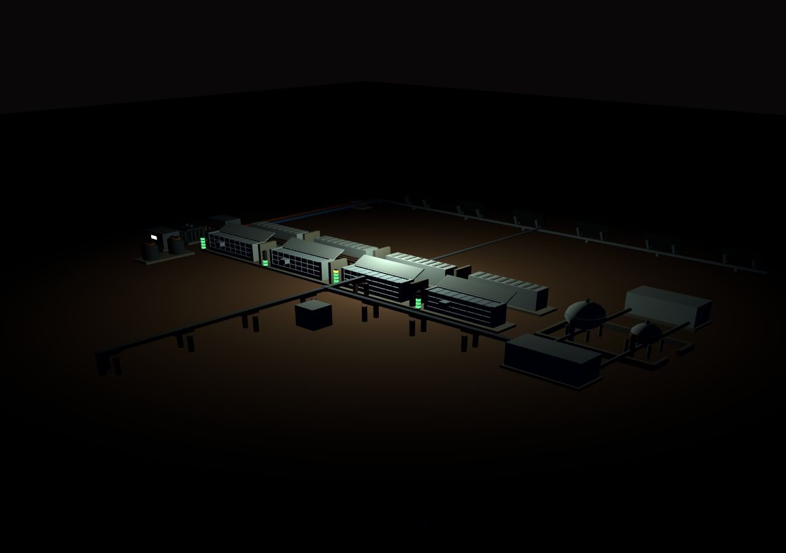
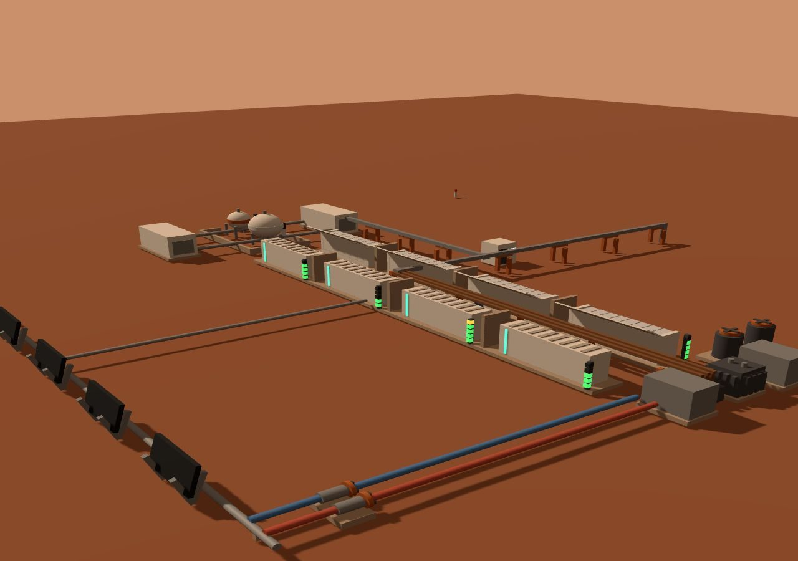
An LFP cell over a full sol returns 99.45% round-trip and sheds 1.6 mW of heat. Only a tenth of the field's waste heat is electrochemical — the rest is the inverter and auxiliaries.
With almost no air to convect into, the Earth reflex is forced-air cooling. The model says it is unnecessary: bare radiative panels hold a module at 27 °C at 0.1C. The real ceiling is internal conduction, near 0.4C sustained.
Across a 60-sol dust season at 15% residual sun, the bank carries a 90 kW survival load for 30 sols and the fuel cell never starts. The regenerative loop is tail insurance for the 5%-residual black storms, not the workhorse.
Feeding the measured 99.45% back into the energy balance halved the assumed waste heat and un-stuck the radiators — handing the limit to the inverter. A 2 MW PCS, not more panels, lifts the field from 419 to 833 kW.
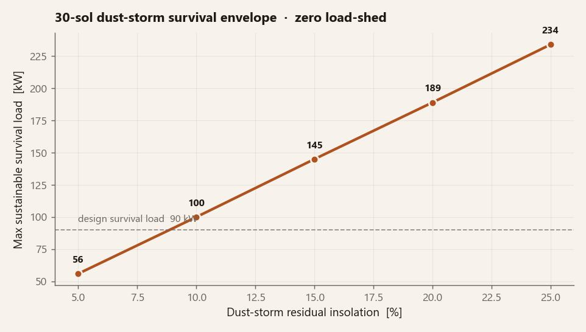
Every headline number on this page, and the exact run that produced it. Nothing here is a guess — for the reactor, 19 Python scripts, 2 COMSOL studies, 18 Geant4 transports and one HFSS solve; for the storage field, a six-layer L0–L4 chain; for the fission plant, 21 ledgers backed by OpenMC transport. Where two of those chains overlap, they were run without a shared model and are quoted side by side.
| Claim | Value | Produced by |
|---|---|---|
| Fusion power & gain (2026-07 design account; superseded, see What broke) | 848 MW · Q 34 | tokamak/sysdesign/tokamak_0d.py |
| On-axis / conductor field | 8.85 / 21 T | tokamak/sysdesign/tokamak_0d.py |
| Net electric (honest recirc) (2026-07; superseded) | 176 MWe | tokamak/sysdesign/current_drive.py |
| Equilibrium, PF currents, fx≥20 | q95 3.93 | tokamak/sysdesign/equilibrium_longleg.py |
| D-coil peak stress | 999 MPa | tokamak/comsol/tf_coil_stress_dshape.java |
| Net breeding ratio @88% | 1.10 | tokamak/neutronics/blanket_tbr.cc |
| REBCO life @0.12 m WC-B4C | ≥5 yr | tokamak/neutronics/blanket_tbr.cc |
| Divertor exhaust difficulty | 49 MW/m | tokamak/sysdesign/divertor_2pm.py |
| Predictive-transport operating point (2026-08) | 640 MW · Q 5.3 · +48 MWe | tokamak/sysdesign/torax/ + v5_rebaseline.py |
| LH wave deposition (ray-traced) | ρ 0.85–1.0 | tokamak/sysdesign/lhcd_raytrace.py |
| Detachment: Ne seed + density | 3% · 0.67 nGW | tokamak/sysdesign/divertor_1d.py |
| LHCD TE10 cutoff verified | 3.75 GHz | tokamak/hfss/lhcd_hfss.py |
| Density-limit (PDI) margin | 5.7× | tokamak/sysdesign/lhcd_density_limit.py |
| Radiator field @600 K | 4.65×10⁴ m² | tokamak/sysdesign/isru_cogen.py |
| Machine mass → Starship flights | 10.3 kt · 34 | tokamak/sysdesign/mass_budget.py |
| Disruption vertical loads | 27–55 MN | tokamak/sysdesign/disruption.py |
| Tritium startup · doubling | 1.7 kg · 136 d | tokamak/sysdesign/tritium_cycle.py |
| TES 3×50% forced shutdowns | 0.08 /yr | tokamak/sysdesign/tes_availability.py |
| W armor life @≤20 h/yr reattach | 21 yr | tokamak/sysdesign/divertor_erosion.py |
| Storage — islanded design point (2026-07 sizing; see note below) | 833 kW · 2 MW PCS | mars_pwr_storage/analysis/L0v2_calibration.py |
| Storage — role now: 60 s bridge, then N-2 reserve | 450 kW peak → −5 kW | mars_pwr_storage/analysis/L4_bridge_transient.py |
| Storage — N-2 endurance on the T1 tier | 10.1 sol | mars_pwr_storage/analysis/L4_bridge_transient.py |
| Grid — city steady mean load (context for the row above) | 707 kW | pwr-grid-01 · grid_01_load_ledger.py |
| Fission — the gap it exists to fill | 63.7 kW · 47.1 MWh/30 sol | mars-fission/sim/01_gap.py |
| Fission — installed / N-1 firm | 320 / 280 kWe | mars-fission/sim/03_modularity.py |
| Fission — Stirling conversion @1050 K | 25% | mars-fission/sim/04_thermal.py |
| Fission — berm to reach 1 mSv/yr | 4.0 m regolith | mars-fission/sim/11_openmc_shield.py |
| Fission — switchover, battery current to zero | t ≈ 5 min | mars-fission/sim/08_switchover.py |
| Storage — LFP cell round-trip | 99.45% | mars_pwr_storage/analysis/L1_cell_electrochem.py |
| Storage — module thermal ceiling (passive) | 27 °C @0.1C | mars_pwr_storage/analysis/comsol/L2_module_thermal.java |
| Storage — dust-storm survival load | 145 kW @15% | mars_pwr_storage/analysis/L3_system_dispatch.py |
| Storage — solar field sizing | 2.9 MW | mars_pwr_storage/analysis/L0v2_calibration.py |
| Storage — H₂ reserve store | 336 kg | mars_pwr_storage/analysis/L0_energy_balance.py |
Note on the storage row. The 833 kW design point was sized in July 2026, when the storage field was the city's islanded backstop and the tokamak its only source. It has not been withdrawn and it has not changed — the hardware is the same — but the job has changed twice since. First it became the survival grid: 145 kW held at 15% residual sun against a 78 kW T1 tier, 1.85× coverage, a number two sessions arrived at without knowing of each other. (The city's steady mean draw is 707 kW, so the yard was never the whole grid — it was always the protected slice of it.) Then pwr-fission-01 came on line and took the long hold away, leaving the battery the two things it is uniquely good at — bridging the first sixty seconds, and standing reserve against an N-2 fission event, where it is still worth 10.1 sol on T1. The island stopped being a stopwatch.
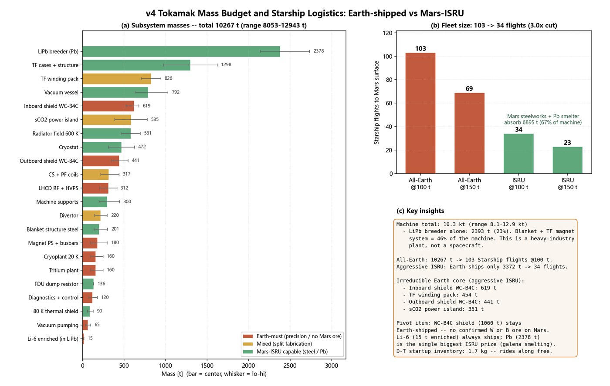
The design changed shape five times because a solver said no. The rejections were more useful than the successes.
The 848 MW / Q 34 / 176 MWe above came from a 0D account that bet on H98 = 1.0 confinement and a 66% bootstrap fraction. Running the same machine through DeepMind's open-source TORAX (QLKNN and TGLF-NN turbulence surrogates, real long-leg equilibrium), then ray-tracing the lower-hybrid waves (they never reach mid-radius at reactor edge density), switching the core current drive to ECCD, and letting sawteeth collect their tax: every self-consistent steady state converges to Ip ≈ 11 MA, 640 MW, Q ≈ 5, about +48 MWe net. The consolation is real: wall load drops 25%, divertor margin grows 1.33×, tritium startup falls to 1.31 kg. Same hardware, honest identity: a burning-plasma demonstrator and a 700 MW-class ISRU heat source that barely powers itself.
→ v5 operating point: 640 MW · Q 5.3 · +48 MWe — the numbers above are kept as the design record
Once the blanket went to LiPb and a 0.12 m tungsten-carbide shield was needed to give the REBCO magnets a 5-year fluence life, the radial build no longer closed inside the original envelope. Tritium self-sufficiency and magnet life were mutually exclusive at 7.0 m.
→ cryostat grew to Ø14.3 m; higher field bought it back
Thickening FLiBe does nothing — TBR saturates at 0.8 m. The intuitive fix, a neutron multiplier layer, peaks at 6 cm and then collapses: the softened spectrum gets parasitically captured in the tungsten first wall and steel. 30 cm of beryllium leaves TBR at 0.53.
→ only LiPb + thinned structure + ≥88% coverage crosses the line
The first magnet sizing set the copper cross-section so that a pure dump — with no detection delay at all — landed exactly at the 200 K hot-spot limit. Any real detection lag overshot it. Worse, the resistive voltage available in that window was under 20 mV, five times below the noise floor, because REBCO normal zones crawl at millimetres per second.
→ 15 kV dump + fibre-optic detection + copper margin, jointly
The divertor wants a dense plasma edge; a dense edge raises fusion power; higher power blows the neutron wall-load limit. Pushing the Greenwald fraction to close the divertor's density gap hit the 2.5 MW/m² wall limit at fGW = 0.78, leaving a residual 1.5× gap that only divertor neutral compression can close.
→ documented as the binding operating-window constraint, not hidden
The HFSS driver (pyaedt 1.0.1) crashed on Ansys 2026 R1 and had to be pinned to 2024 R1.
The Geant4 build hit a broken conda toolchain (math.h / include_next). And in the 3D asset, the
D-shaped ribs lay flat on the ground until a stray rotation.x was removed — a
one-line bug caught only by rendering it.
→ every gotcha written down so the next run skips it
The first energy balance assumed a 92% round-trip and blamed the radiators for capping the
storage field at 429 kW. When PyBaMM measured the cells at 99.45%, the waste heat halved and the
radiator limit evaporated — exposing the real ceiling underneath: the inverter couldn't refill
the night's charge inside the solar window. Doubling the PCS to 2 MW, not adding panels, is what
unlocked 833 kW. And in the 3D asset the flywheels and pumps sat frozen until a
userData.spinners key was renamed from obj to node to
match the engine — a silent one-word bug caught only by driving it.
→ the honest bottleneck was a wrong efficiency assumption, not a hardware count
The plant, its radiator field and the storage yard are placed on the crater floor and lit at night.
Open the main viewer, press C to raise the tech city, and head to the power district. Add ?inspect=pwr-fusion-01 to the URL to frame the plant, or ?inspect=pwr-radiator-01 for the radiator field. Walk close and each building floats its own device label — cryostat, cryo tanks, RF/LHCD launcher, heat exchanger, generator hall, control cabin.
After dusk the generator-hall windows glow and the radiator panels take on a faint 600 K warmth. The radiator field lies low, so twin red hazard beacons mark its two ends from over a kilometre out — walk toward them and the field opens up ten times the footprint of the plant that feeds it.
West of the reactor sits the storage field — add ?inspect=pwr-storage-01 to frame it. Eight white cabinets carry green-and-amber state-of-charge light-stacks, twin inverter skids feed a hot/cold coolant loop out to the radiator row, and the hydrogen and oxygen spheres of the regenerative loop stand apart behind their blast berm. Seven POI cards hold the L0–L3 numbers; walk close and they open.